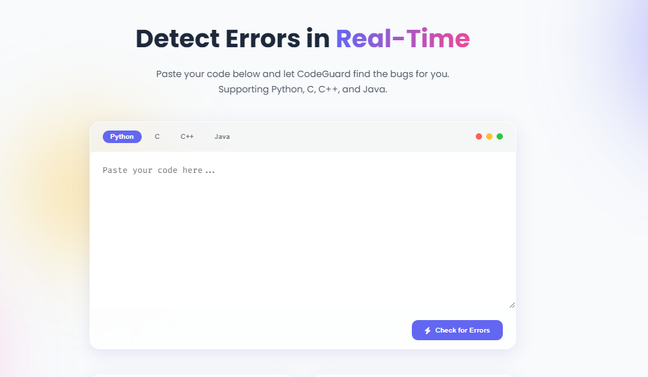
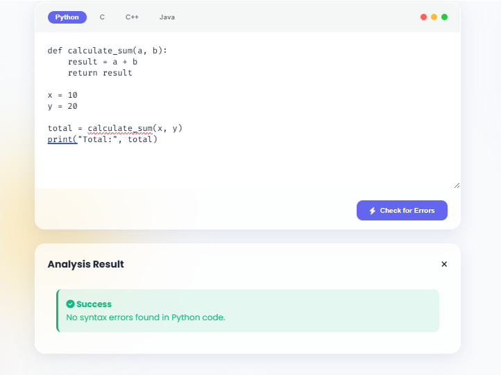
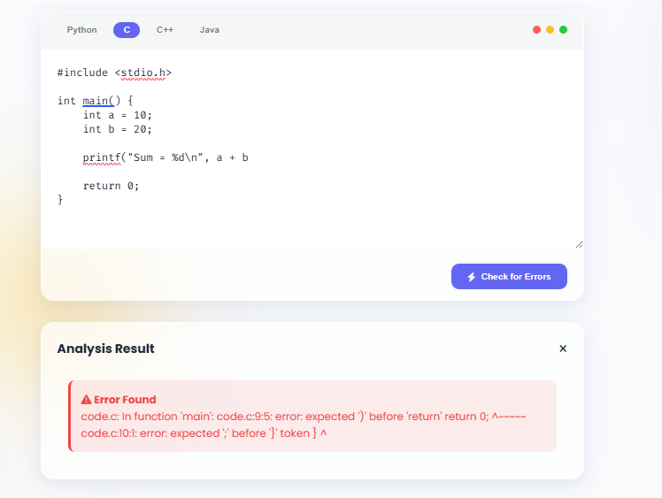
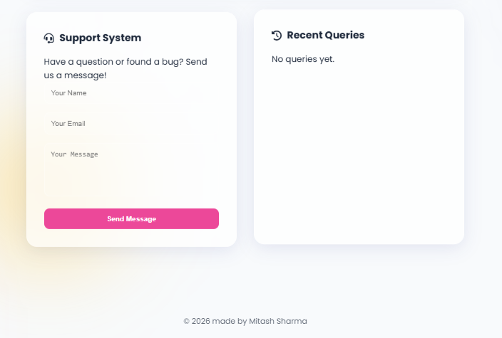

Error Detector
A web-based programming error detection tool designed to analyze code, identify common errors, and provide clear explanations and possible solutions.
Project Overview
Error Detector is a web application designed to help students and developers understand programming errors more easily.
Users can enter code or provide error information, and the application analyzes the input to identify possible programming issues and provide useful feedback.
The project focuses on making debugging more accessible by presenting technical error information in a simpler and more understandable format.
Objective
The main objective of Error Detector is to simplify the debugging process by helping users identify programming errors and understand why they occur.
The system provides an interactive environment where users can analyze errors, understand their causes, and explore possible approaches for resolving them.
Key Features
- Detection and analysis of common programming errors
- Clear explanations of detected errors
- Suggestions for possible solutions
- Simple interface for entering code and error information
- Interactive error analysis and feedback
- Responsive web interface for different screen sizes
How It Works
The user provides a code snippet or programming error through the application interface.
The backend processes the submitted information and analyzes the input to determine the type and possible cause of the error.
The detected error is then presented to the user along with an explanation and possible troubleshooting steps.
Core Mechanics & Concepts
The application uses Python-based backend logic to process user input and handle error detection.
Flask is used to connect the backend functionality with the web interface, while HTML, CSS, and JavaScript are used to create the user-facing application.
SQLite can be used for storing relevant application data, allowing the system to maintain structured information when required.
Technologies Used
Project Workflow
Project Output
The application provides users with an interactive interface for submitting programming errors and viewing the resulting analysis and troubleshooting information.




Project Outcome
The project demonstrates the practical use of Python and Flask to build a web-based debugging and error analysis application.
It provides a useful learning tool for students and beginner developers by making programming errors easier to understand and troubleshoot.
Future Improvements
Future versions could support additional programming languages, more advanced error classification, automated code correction suggestions, AI-powered explanations, and integration with external development environments.
← All Projects